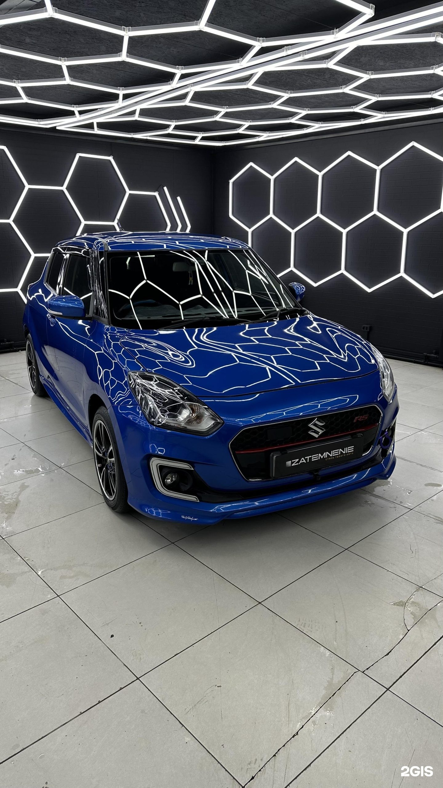

Солнце снаружи, прохлада за стеклом
Тонируем стёкла и подбираем защитные плёнки под вашу машину. Уезжаешь, а с улицы уже не видно, кто за рулём.
Южно-Сахалинск
Zatemnenie
Zatemnenie работает на Железнодорожной улице, 168в — слева от компании АвтоЗаказ65. Здесь занимаются тонированием автостёкол, защитными плёнками и детейлингом. Машину забираешь такой, что ехать хочется дольше обычного.
Что мы делаем

Тонировка стёкол
Днём салон раскаляется, а с улицы видно всё, что внутри. После тонировки в машине прохладнее, и никто не разглядывает, кто за рулём.
Защитные плёнки
Плёнка ложится на кузов прозрачным слоем и берёт на себя повседневные отметины. Краска под ней остаётся такой, какой была в день покупки.
Детейлинг
Уход за кузовом и салоном в одной услуге. Забираешь машину, которая выглядит ухоженной и снаружи, и внутри.
← листайте →
Фото
Коротко о студии
Выходные рабочие
Студия открыта и в субботу, и в воскресенье, с 10:00 до 18:00.
Понятный заезд
Железнодорожная, 168в — слева от компании АвтоЗаказ65.
Оплата без хлопот
Принимают карту, наличные, перевод и оплату по QR-коду.
Запись в мессенджере
Договориться о визите можно в WhatsApp, Telegram или по телефону.
Четыре шага
Записываетесь
Звоните или пишете в WhatsApp либо Telegram и выбираете удобный день.
Приезжаете
Железнодорожная, 168в — слева от компании АвтоЗаказ65.
Выбираете услугу
Тонировку, защитную плёнку или детейлинг под свою машину.
Оплачиваете
Картой, наличными, переводом с карты или по QR-коду.
Запишитесь на удобный день
Студия открыта Пн–Чт и в выходные с 10:00 до 18:00, пятница — выходной.
Частые вопросы
В какие дни вы работаете?
Понедельник–четверг, суббота и воскресенье — с 10:00 до 18:00. В пятницу студия не работает. Время визита выбираете при записи.
Как вас найти?
Железнодорожная улица, 168в, слева от компании АвтоЗаказ65.
Как можно оплатить?
Картой, наличными, переводом с карты или по QR-коду.
Сколько стоят ваши услуги?
Цена зависит от марки и модели машины и объёма работ. Сумму называет студия по звонку или в мессенджере.
Как записаться?
По телефону, в WhatsApp или Telegram.
Чем тонировка отличается от защитной плёнки?
Тонировка меняет оттенок и светопропускание стёкол: снижает нагрев салона, смягчает яркое солнце и мешает заглянуть в салон снаружи. Защитная плёнка прозрачная и клеится на кузов, например на капот, бампер, пороги или фары, чтобы смягчить сколы и мелкие царапины. Эти работы решают разные задачи, поэтому их выбирают отдельно или вместе. По закону есть ограничения по светопропусканию стёкол, поэтому оттенок обычно подбирают с их учётом.
Чем полировка отличается от химчистки?
Полировка работает с лакокрасочным покрытием кузова: убирает мелкие царапины и потускнение и возвращает блеск. Химчистка относится к салону: она занимается сиденьями, ковриками и обивкой и убирает загрязнения и неприятные запахи. Обычно выбирают то, что беспокоит больше: внешний вид кузова или чистоту салона.
Нужен ли машине детейлинг?
Детейлинг — это комплексный уход: очистка, полировка и защита кузова и салона. Он не обязателен, но помогает сохранить внешний вид машины. Для новой машины его часто делают, чтобы заранее защитить краску от мелких повреждений. Для машины с заметным износом детейлинг помогает вернуть ей прежний вид.
Что нужно делать после тонировки и защитной плёнки?
Сразу после работы плёнке нужно время, чтобы высохнуть и плотно прилипнуть, поэтому стёкла первое время не опускают и не трут изнутри. Мыть машину лучше без сильного напора воды и без жёстких тряпок. Конкретные рекомендации зависят от вида плёнки и условий.